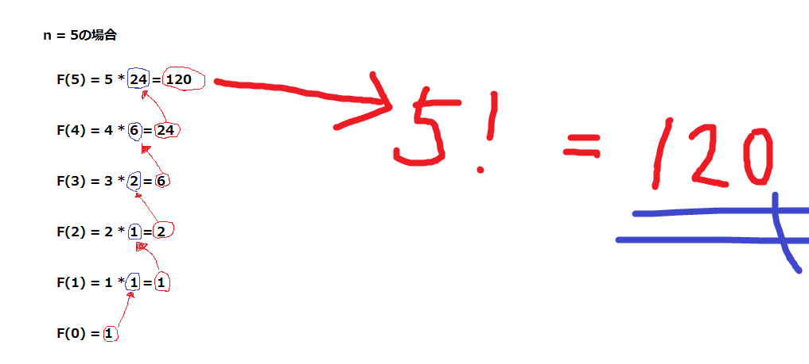

再帰関数の基本的な知識から応用的な知識を書き込もうと思います。
再帰関数とは、関数の中からその関数自身を呼び出すような処理を行う関数のことである。
その関数自身を呼び出すため、関数の呼び出しが無限に行われないようにするために、必ず終点を作っておく必要がある。
F(n) を再帰を使用した数式で定義する。
F(n) を求めるには、 F(n - 1) と n を掛け合わせた値が必要である。
F(5) の場合を考えてみよう。
この場合、 F(5) = 5 × F(4) と表すことができる。
これが意味するのは、 (5の階乗) = 5 × (4の階乗) ということである。
無限に関数が呼び出されてしまわないように、 F(0) = 1 ( 0! = 1 ) を定義する。
すると、F(1) = 1 × 1 = 1 , F(2) = 2 × 1 = 2 , F(3) = 3 × 2 = 6 , F(4) = 4 × 6 = 24, ……
このように順番に値が決まっていき、値が返っていく。すると、最終的な答えに辿り着き目的の値を手に入れることができる。

↑の図が n = 5 である時の、再帰関数のイメージ的なものである。
つまり再帰関数とは、関数内で値を求めるために、引数(例えば F(n) の n )を変えた同様の関数を展開し、
自明な(特に説明しなくても明らかな)答え(今回は F(0) = 1 )を用いることで、
そこから順番に部分的な答えが返り、返り、返り、……といったことが繰り返されるような関数ということである。